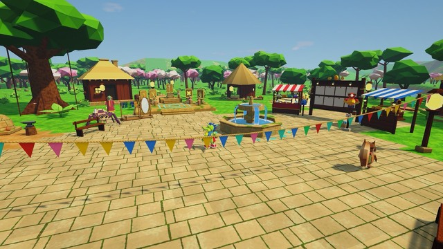
Explore with friends
Host a world with a password and invite the family. Fight side by side and share every reward.
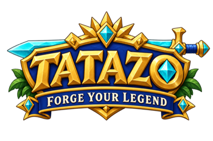
A family open-world adventure. Sail between faraway lands, choose your class, tame a winged pegasus, and face Aurendrake, the Old Warden, together.
Coming to PC · Launch date to be announced
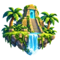
9 realmsacross one ocean, linked by ferries
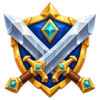
5 classesand a wardrobe of looks for each
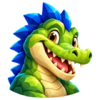
15 petsfrom legends told around the world
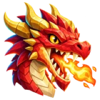
7 wardsone ancient dragon, for seven or more friends
Start in a riverside village in the Riverlands, then take the ferry to snowy peaks, glowing mushroom hollows, dinosaur jungles and a volcano where dragons nest. Every shore is a new adventure for the whole family.
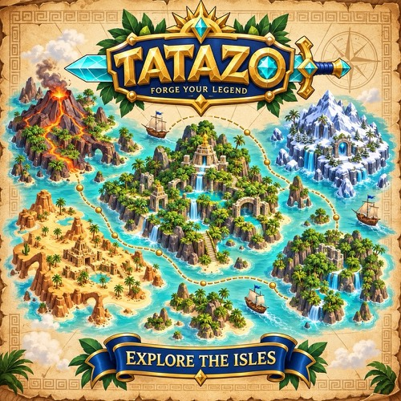
Little ones can wander and build. Older ones can chase bosses. Everyone meets back in the village.

Host a world with a password and invite the family. Fight side by side and share every reward.
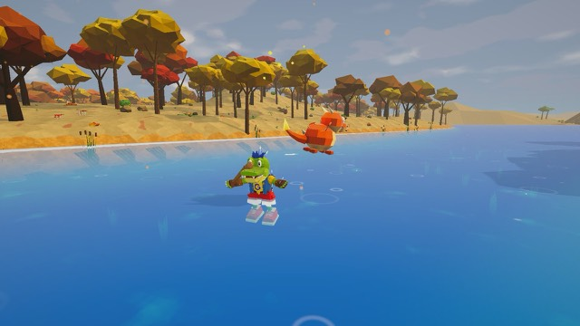
A phoenix, a unicorn, a baby kraken and more: 15 pets that follow you, swim beside you and grow up with you.
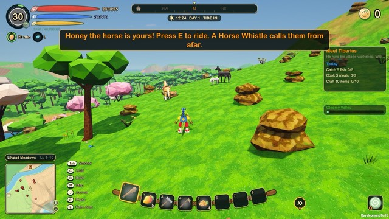
Befriend a wild horse gently, name it and ride. On clear nights, a winged pegasus might land nearby.
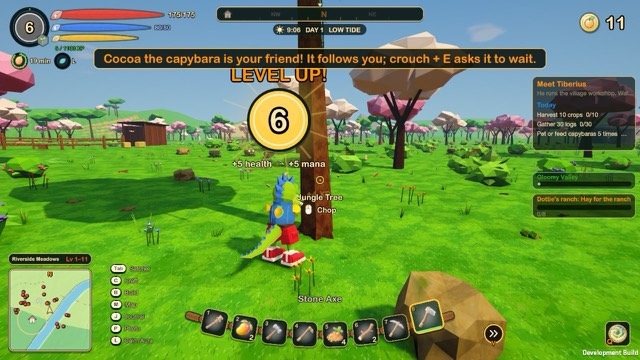
Make friends with a capybara and it trots along beside you. Crouch and ask it to wait, or hop on for a ride.
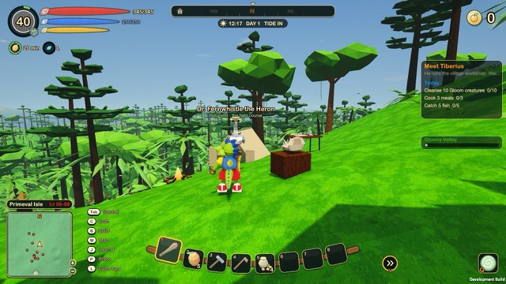
Till, plant and harvest, cook what you grow, and craft everything from a fishing rod to a house by the river.
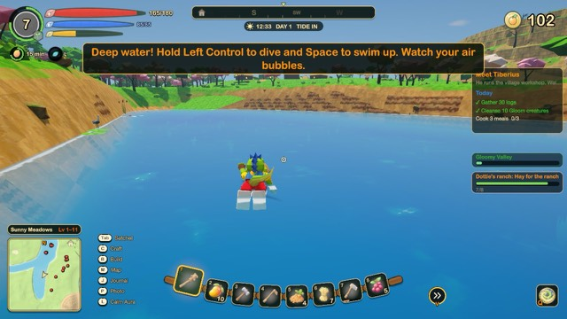
Splash in rivers and lakes, paddle a canoe, and dive for treasure at the bottom of the sea.
Host a world for your family and friends and set off as a team. Little ones can build by the river while older ones scout the next boss, and everyone meets back at the campfire.
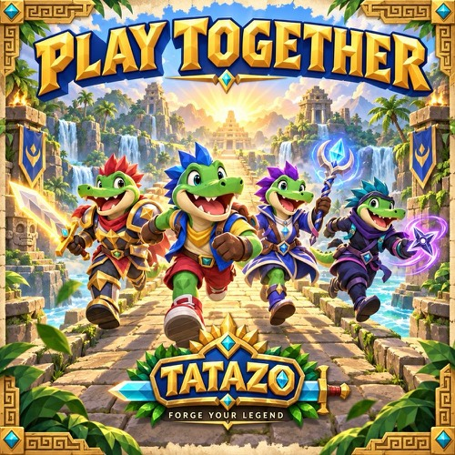
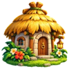
Pick a class at the Class Shrine and learn from a friend in the village. You can change your mind later.
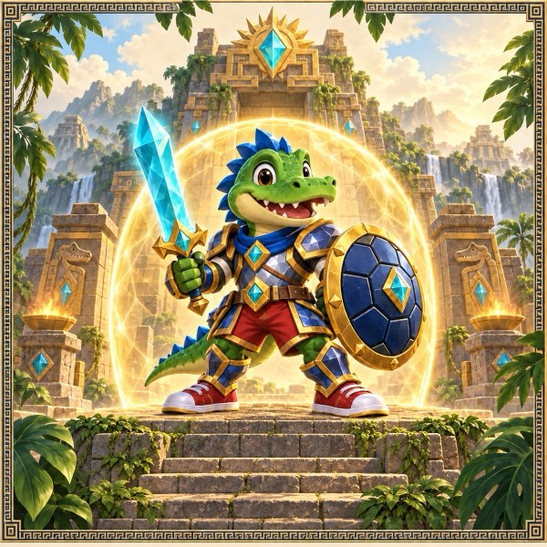
Shields friends with a turtle shell and raises walls that hold the Gloom back.
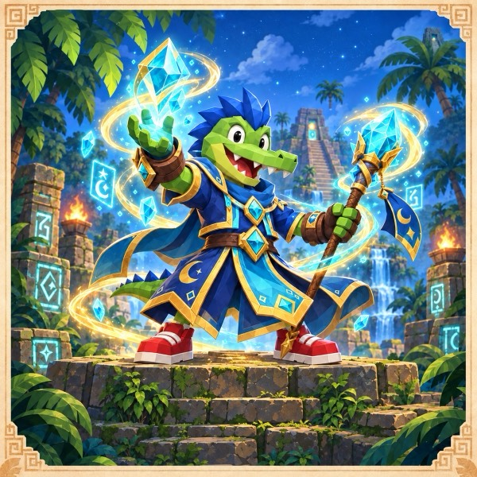
Clean-water bolts, ice bridges over the river and healing rain.
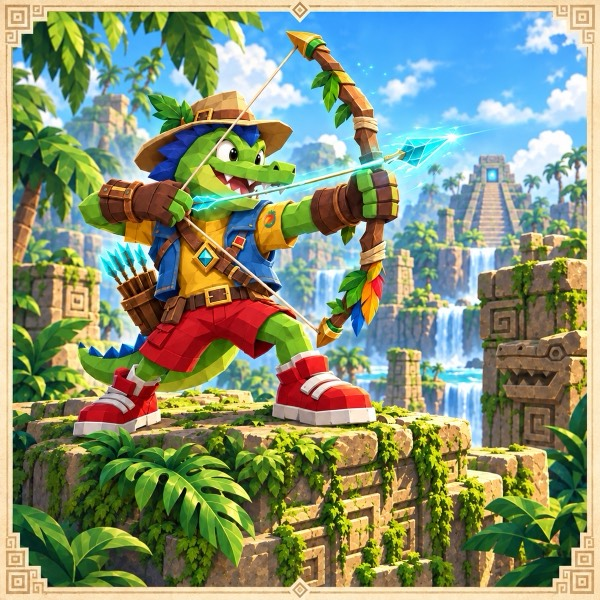
Seed pods that sprout reeds, quick arrows and marks on the biggest foes.
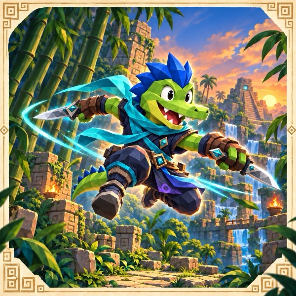
Blurs past foes, slips away in a smoke veil and climbs where others can't.
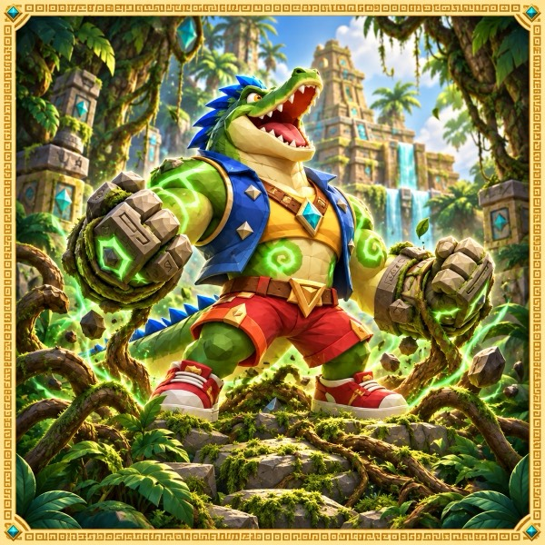
Calls river critters to help, rakes with claws and can bring a second pet.
Shields friends with a turtle shell and raises walls that hold the Gloom back.
Clean-water bolts, ice bridges over the river and healing rain.
Seed pods that sprout reeds, quick arrows and marks on the biggest foes.
Blurs past foes, slips away in a smoke veil and climbs where others can't.
Calls river critters to help, rakes with claws and can bring a second pet.
Guardian of the isles · taught by Tiberius
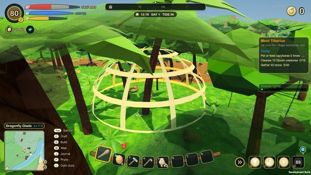
Sun-gold armour, storm robes, moonflower ninja wraps, lighthouse-keeper coats. Every class has looks to earn and wear, and Tatazo can be a boy or a girl gator.
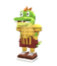
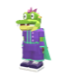
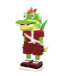
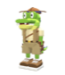
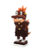
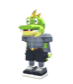
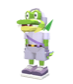
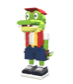
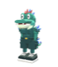
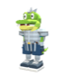
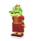
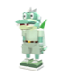
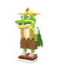
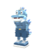
Every land has a champion of its own, rising at a lair far from the harbour. Calm it, claim its trophy, and it returns a game day later.
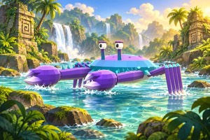
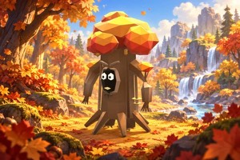
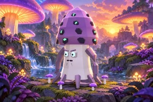
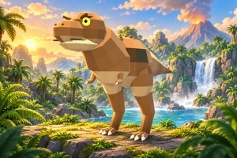
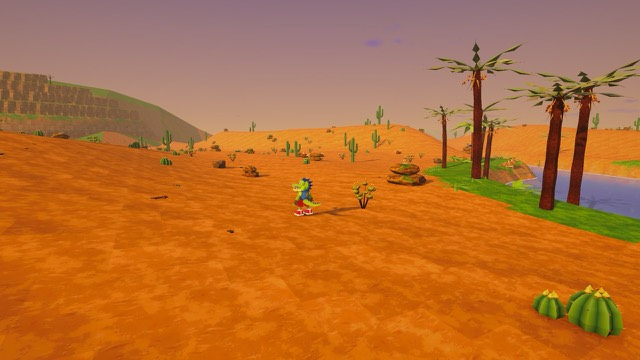
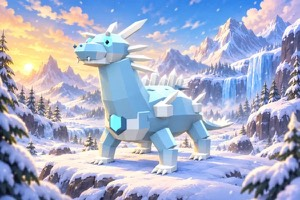
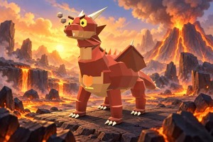
These are unedited screenshots from the current build. The game is still growing, so things will keep getting better.
Say hello in the village, check your garden and pick a daily goal. Skipping a day is fine.
Ride out, take a ferry, or find a new place to swim.
Lanterns come on. When the village throws a festival, everyone gets cake.
Glowing mushrooms, fireflies and a good place to stop for the day.
When the sun sets in the game, a little card can ask everyone playing a question to talk about together, like What should we build next?
Capybaras, horses and pets are all waiting to be befriended. Creatures are never hurt for good: they are cleansed, and animals simply run home.
Creatures never attack and there are no levels to grind. Perfect for younger explorers and builders.
Hunger, thirst, cold and heat for older players who want a challenge. The host picks which rules are on.
Optional webcam motion controls turn your moves into Tatazo's. The camera picture never leaves your computer.
Here is what TATAZO does to keep play kind, private and fair, and the controls grown-ups get. It is all in plain words in the family guide.
No advertising and no third-party analytics, in the game or on this site.
Nothing is random for money, there are no timers, and coins are earned only by playing.
Motion controls are optional and work entirely on your own computer. Camera pictures and body positions are never sent anywhere.
A Family screen behind a parent PIN: daily play time, trading, friend approval, break reminders, and purchases that stay off until you turn them on.
Players talk with friendly preset phrases and emotes. Nobody can type a message to your child, and anyone can be muted or blocked.
Every world says who it is for. A child's profile only lists worlds for everyone, and a host can lock a world with a password.
No game can promise nothing will ever go wrong. The best protection is still a grown-up who plays along, so TATAZO is built to be fun to play together.
Host a world, share the password with family and friends, and set off on the next adventure side by side.
Wishlist on SteamBe first to hear when the heroes set out. One short email at launch, and now and then when something big arrives.
Under 16? Please ask a parent or carer to sign up for you.
Add TATAZO to your Steam wishlist, then follow along as new classes, looks and lands are shown.
Wishlist on Steam